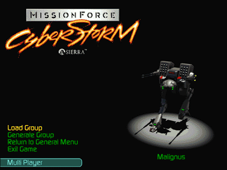

Click on the animation in this screen to rotate through all of the Hercs and Cybrids.
Load Career
Choose this option to load a saved scenario and pick up the battle where you left off.
Allows you to select Difficulty Level, then takes you through some informational screens (click on each one to proceed) before dropping you into the Herc Base for further set up.
This option bypasses all of the set-up options normally available at the Herc Base and takes you right into the action. This is a single mission option only and cannot be made into a career.
The Load and Start options are also available from the pull-down menus at the top of the screen.
